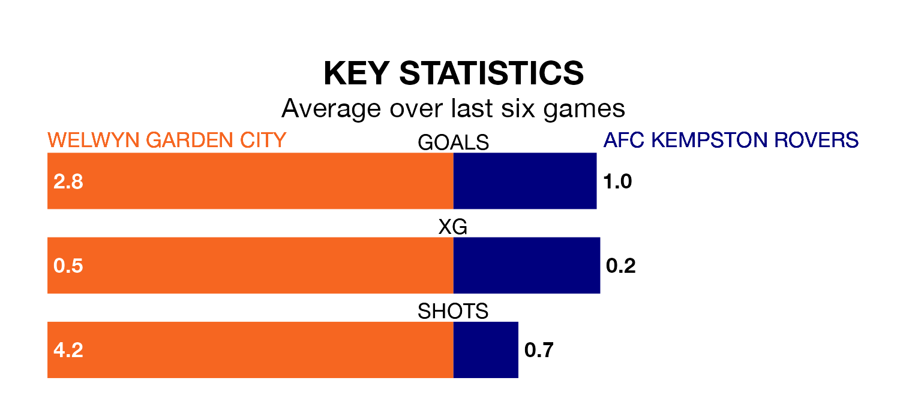

Welwyn Garden City are heavy favourites to keep all three points at home in Tuesday's late kick-off against AFC Kempston Rovers.
Welwyn Garden, who sit 12th in the Southern League Division One Central with 20 games played, are priced at 1.3 to seal victory.
Sitting seven places and 16 points behind them in the table, Kempston Rovers are 6.5 to win with *Betting Company*, while the draw is at 5.0.
In the last 10 years, Welwyn Garden and Kempston Rovers have played each other on six occasions. Welwyn Garden won four of them, Kempston Rovers one, and they drew once.
On average, Welwyn Garden scored 2.3 goals and Kempston Rovers 1.5 in those matches.
Their last meeting was on February 3, when Welwyn Garden won 2-1 away.
With 20 goals in 21 games so far this season, Kempston Rovers are the league's lowest scorers with 1.0 goals per game. And they are conceding more than average, letting in 45 goals at a rate of 2.1 per game.
Welwyn Garden, meanwhile, are above average scorers, with 2.2 goals per game, compared to a league average of 1.7. They have conceded 2.1 goals per game.
City are in mixed form in the Southern League Division One Central, with three wins and three losses from their last six games.
With a win and a draw over that period, the visitors' form is worse – they have taken four points from 18, compared to the home side's nine.
Welwyn Garden's last match was on February 3, a 2-1 win against AFC Kempston Rovers.
Kempston Rovers lost 2-1 against Hertford Town last time out, on Saturday.
Updated: 13:30 (UTC), 12/02/24